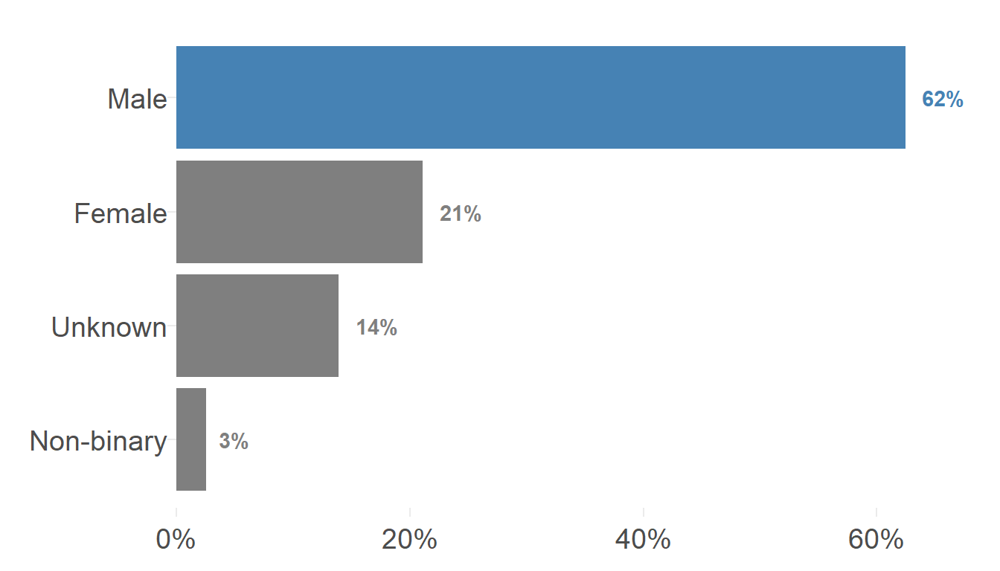
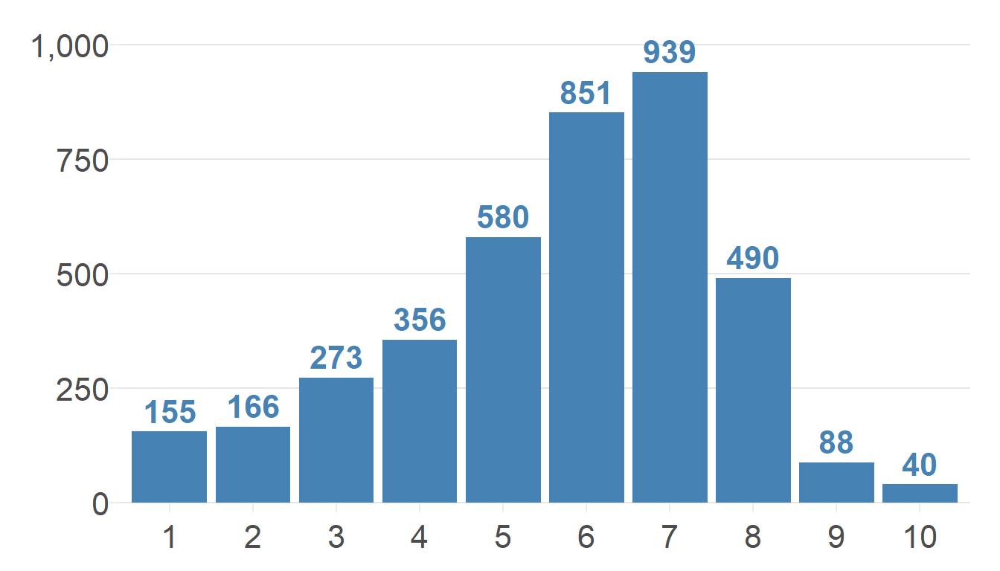
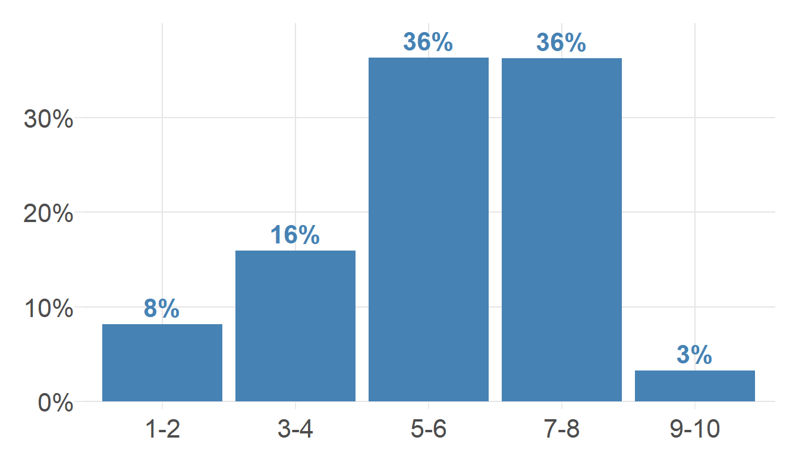
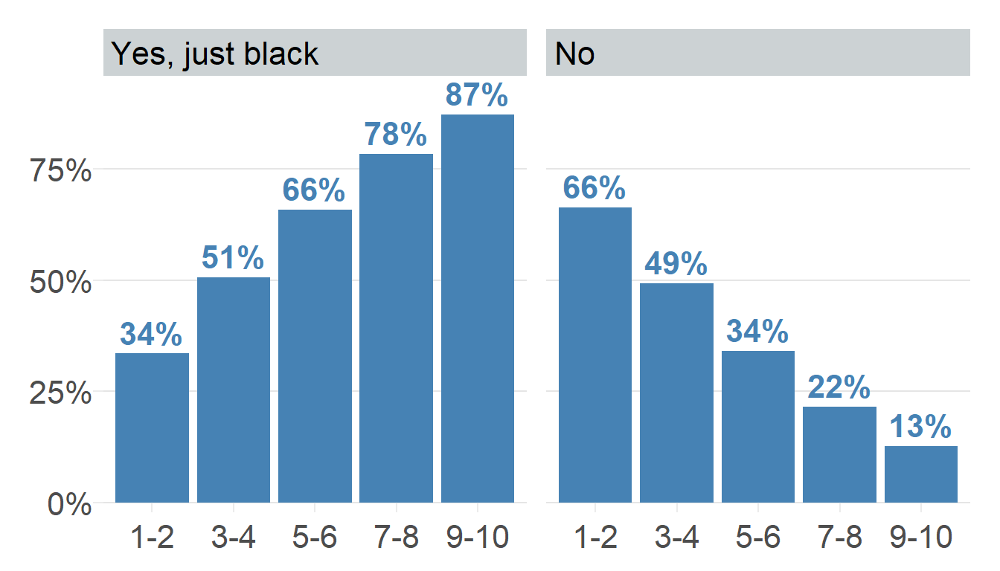
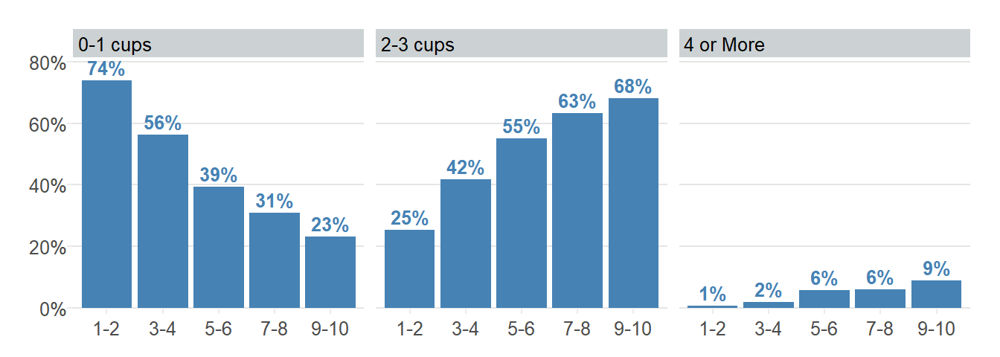
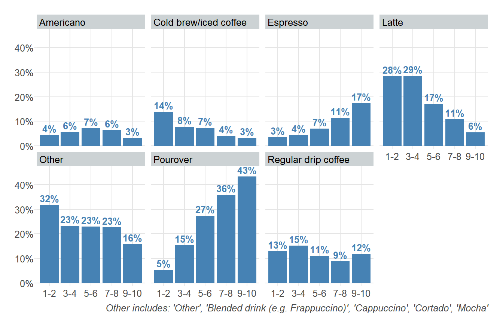
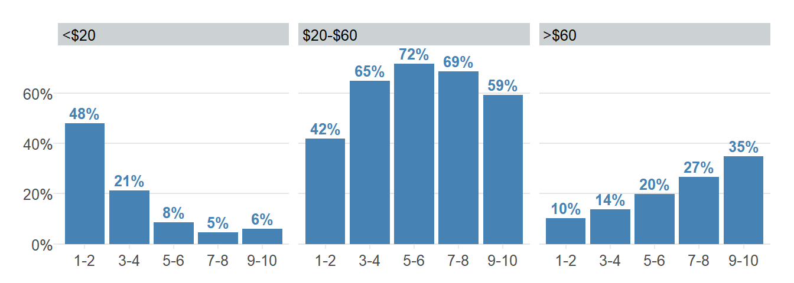
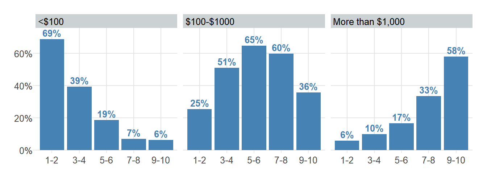
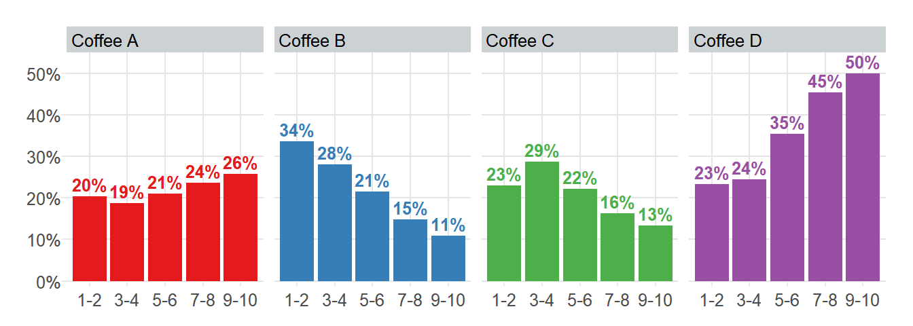

| Coffee | Roast Level | Origin |
|---|---|---|
Coffee A
|
Light | Single - Kenya |
Coffee B
|
Medium | Multiple - Blend |
Coffee C
|
Dark | Multiple - Blend |
Coffee D
|
Light | Single - Columbia |
An Analysis of James Hoffman’s ‘The Great American Coffee Taste Test Live Stream’
Quarto
Author
Data analysis
Data Viz
I used a survey with 4,000+ responses taken from participants in the live event to analysis coffee habit, preferences, and coffee tastes.
The “Great America Taste Test” is what coffee expert and British YouTuber James Hoffman called the live stream coffee tasting event held in October 2023. 5,000 Americans participated in this simultaneous coffee sipping event where each participant tasted the same four coffees. They were then asked to fill out a survey of around 100 questions ranging from coffee drinking habits to describing the coffee flavors of the tested coffees. Of the 5,000 participants, 4,042 surveys were completed.

Being a coffee nerd and a data analyst, I decided to analyze the results! James did do a follow-up video on his own analysis on the survey so I don’t want to overlap too much on his findings.
I’ll go through the participant demographics, spending habits, coffee preferences, and coffee tasting. I looked at how bitterness and acidity was rated in each coffee then I went deeper to find if there were commonalities in coffee flavor notes via a text analysis.
So What Were The Four Coffees?
The four different coffees, Table 1, were each of a different roast: light, medium, and dark. The fourth coffee, Coffee D, was a light roast coffee but with a unique processing method. The method was anaerobic natural fermentation, meaning that coffee cherries were kept in a closed container with no oxygen as to allow for fermentation of the raw coffee beans - this tends to give the coffee a heavy fruity and fermented taste. Yum!
Based on these four coffees, how do you think the tastes will compare? Which would you think are more bitter or more acidic? Do you think you would have a favorite?
Demographics
Nearly 3 out of 4 (74%) participants were between ages 25 and 44 years (Table 2) which is much higher compared to the worldwide YouTube audience where only 37% are between these ages 1. Participants are also overwhelming male representing 62% of participants verse U.S. YouTube demographics where 49% are male 2. We can say James’ audience tend to be younger and male, even accounting for YouTube bias.
I also looked at the breakdown of daily coffee drinking by age in Table 2. Interestingly, we see a trend in drinking more coffee per day as one ages. Who said college students drink lots of coffee, maybe we should say it’s the retirees who drink far more because of their greater spare time?

| Age Group | n | Age Group Prop |
0-1 cups||2-3 cups||4 or More
|
|---|---|---|---|
| <18 years old | 19 |
0%
|
|
| 18-24 years old | 447 |
11%
|
|
| 25-34 years old | 1956 |
50%
|
|
| 35-44 years old | 948 |
24%
|
|
| 45-54 years old | 296 |
8%
|
|
| 55-64 years old | 182 |
5%
|
|
| >65 years old | 94 |
2%
|
|
| 100 participants were removed due to null response values. | |||
Coffee Expertise
Participants were asked to rate one’s own coffee expertise on a scale of 1 - 10. Not surprisingly, we see participants lean towards the upper half with nearly half (45%) rating themselves as a 6 or 7. However, there is still a significant number on the lower end and very few at a 9 or 10, pulling the overall average down to 5.7. As to more easily compare these groups throughout my analysis, I binned one’s level of expertise into five groups. Now, the ‘5-6’ and ‘7-8’ expertise groups make up about the same proportion (36% each) and the ‘9-10’ expertise group make up only 3% of total participants.


Coffee Habits
Coffee Consumption
Let’s explore the coffee drinking habits by expertise group. Figure 5 shows a trend in increasing coffee consumption as one learns more about coffee. Some even drinking 4 or more cups per day with nearly 1 out of 10 participants for the ‘9-10’ expertise group. Figure 4 shows a similar correlation in which participants tend drink coffee just black - meaning no milk, sugar, or other additive (like olive oil, gross) - as one gets more knowledgeable.


Figure 6 shows that a pour over is up to 8x more likely to be consumed by those with more coffee expertise compared to those with little expertise. Perhaps this explains why so many prefer to drink coffee black - pour overs tend to use light roast beans as they tend to retain more of their origin flavor and unique elements. A pour over is my daily driver to brew coffee every morning. Interestingly, participants across all expertise groups consistently drink regular drip coffee- I suppose that method is still very quick and convenient whether drinking at home, buying from a gas station, or brewing at work. Admittedly, I’m still confused how an ‘expert’ coffee drinker says their favorite coffee comes from a drip coffee as this method allows for the least control over variables that make great coffee.

Spending Habits
As one would expect, as one becomes more experienced in a hobby, one spends more money. That was very true for me as I fell into black hole of striving to perfect my coffee game, wanting to buy the top gear given my budget.
For the folks with less expertise, nearly half (48%) of them spend less than $20 a month. Figure 5 shows that this group typically drinks far less coffee with most (74%) drinking 0-1 cups per day. Given their low spending, they probably don’t drink a lot of specialty coffee since a bag of beans costs $10-20 nor drink coffee at specialty cafes too often.
We find similar a pattern in low spending when asked how much a participant spent on coffee equipment over the past five years. While James says having a good coffee grinder can greatly improve a cup of coffee, a quality burr grinder typically costs more than $100. This implies these folks probably make terrible coffee with a drip coffee maker, but who am I to judge?
For the upper end - the ‘9-10’ expertise group, most (94%) spend at least $20 a month and over half (58%) have spent over $1,000 over the past 5 years on coffee equipment. Given that this group is much more likely to drink pour over - a method where one may own a goose neck electric kettle, coffee scale, Chemex, and a decent grinder which can easily add up to a few hundred dollars. And they are also more likely to drink espresso (Figure 6) in which they may own an espresso machine at home, a machine that can easily cost over $1,000.


Coffee Cupping
What is Coffee Cupping?
Most of us have probably seen tasting notes when purchasing coffee (i.e. grapefruit, chocolate) and the roast level but are these descriptors actually helpful? Would someone describe similar notes of the same coffee?
 Participants tasted the coffee via coffee cupping, a coffee tasting technique where a taster takes and spoonful of coffee and slurps it as to asses aspects such as cleanness, sweetness, acidity, mouthfeel and aftertaste as in the above picture. But why the slurp? Slurping aerates the coffee as it makes contact with taste buds which intensifies the tasting sensation.
Participants tasted the coffee via coffee cupping, a coffee tasting technique where a taster takes and spoonful of coffee and slurps it as to asses aspects such as cleanness, sweetness, acidity, mouthfeel and aftertaste as in the above picture. But why the slurp? Slurping aerates the coffee as it makes contact with taste buds which intensifies the tasting sensation.
To answer these questions, I looked at how participants ranked the level of bitterness and acidity of each coffee. Then they were asked to write down tasting notes so I will explore this via a text analysis to identify the top flavor notes used to describe each coffee.
Bitterness and Acidity
Participants were asked to rate the level of bitterness and acidity of each coffee on a scale of 1-5. Table 3 and Table 4 shows the average and the distribution of this 5-point scale. We see (Coffee A and Coffee D) and (Coffee B and Coffee C) showed a similar average and similar distribution for both bitterness and acidity.
To find if these differences were statistically different these two pairs of coffee, I performed a one-sided t-test with a 95% confidence level.
For bitterness, I found that Coffee C was statically more likely to be bitter than Coffee B (p=0.005) and Coffee D was not more bitter than Coffee A (p=0.178). We can statistically say the order of bitterness:
Coffee C > Coffee B> Coffee A/Coffee D
For acidity, I found that Coffee D was statically more likely to be more acidic than Coffee A (p=0) and Coffee C was statically more likely to be more acidic than Coffee B (p=0). Again, we can statistically say the order of acidity:
Coffee D > Coffee A > Coffee C > Coffee B
I did perform a t-test for all other combos of coffees and found them all to be statisically different.
| Coffee | Average Bitter | Standard Deviation | Distribution of Rank (1-5) |
|---|---|---|---|
| Coffee | Average Acidity | Standard Deviation | Distribution of Rank (1-5) |
|---|---|---|---|
Taste Notes
Cool we found a correlation in bitterness and acidity in the coffees! Let’s dig deeper into what the coffee tasted like, as described by the participants. So What does the coffee remind you of? was a repeated question James asked to describe the flavor notes during the live stream. Coffee tastes like coffee, but there are nuances in the flavor notes that have a similar mouthfeel as other foods.
Comparing multiple coffees side-by-side allows one to discover the nuances of each coffee. One may start with a general words such as nutty but then move on to identify which type of nut. Below is a coffee flavor wheel3, a tool to help identify words for one’s taste buds (this wheel was NOT used during the live event).
Participants were asked to describe the coffee flavors in an open text field. After some cleaning of these words, I performed a text analysis to identify and count key flavor words, such as bright or grapefruit. I took the top 25 most frequent words of each coffee and created a word cloud. The larger the word, the frequent the word was mentioned (the count of each word is in the hover text).
Coffee A: Top Word was Fruity with 616 Mentions
Coffee B: Top Word was Chocolate with 600 Mentions
Coffee C: Top Word was Chocolate with 332 Mentions
Coffee D: Top Word was Fruity with 1,085 Mentions
For me, Coffee A conjures up images of something light, bright and fruity. While participants described Coffee B and Coffee C as chocolate, nutty, and balanced and even a few described them as burnt. Coffee C had more of an even spread in word counts as words are similar in size. Coffee D, however, paints a much different image. Fermented and funky made it to the top - given this was a fermented natural processed coffee, this is not surprising!
Okay - so let’s see how these top 25 tasting notes match up to the flavor wheel. ‘Acid’, ‘Bitter’, ‘Sweet’, ‘Fruity’, and ‘Chocolate’ are generic words used to describe all 4 coffees, though at different frequencies as demonstrated in the word clouds. We do see a pattern for Coffee A and Coffee D, in yellow, compared to Coffee B and Coffee C, in brown, in that the former is described as much more fruity and floral as opposed to roasted and smoky. Coffee D was described by many specific types of berries.
Coffee Preferences

So going back to expertise groups, let’s see if there’s a correlation in preference of coffee. Participants were asked to describe their coffee preference before the day’s tasting: Table 5 below is a heatmap of breakdowns of these preferences by expertise group. Figure 11 above is a breakdown of favorite coffee by expertise group.
We see those with expertise ‘1-2’ and ‘3-4’ have a preference for chocolatey coffee. As we’ve previously seen in the word clouds, chocolate was the number one word mentioned for Coffee B and Coffee C and a latte was the top coffee for many of these folks (Figure 6), a drink that typically uses a medium or dark roast coffee. So it makes sense to see their favorite coffee was either Coffee B or Coffee C.
As for the ‘7-8’ and ‘9-10’ expertise groups, many have a preference for fruity and juicy coffee. Around 40% of these groups have pour over (Figure 6) as their preferred drink, a drink that typically uses a lighter roast. It makes sense their favorite drink is a light roast. Though it’s interesting that many prefer the more exotic of the two with nearly half had a preference for Coffee D.
| Flavor | 1-2 | 3-4 | 5-6 | 7-8 | 9-10 |
|---|---|---|---|---|---|
| Bold | 8% | 6% | 6% | 3% | 2% |
| Bright | 4% | 7% | 10% | 10% | 9% |
| Caramalized | 10% | 9% | 8% | 5% | 6% |
| Chocolatey | 24% | 22% | 16% | 13% | 5% |
| Floral | 3% | 3% | 5% | 6% | 13% |
| Fruity | 7% | 12% | 23% | 33% | 36% |
| Full Bodied | 12% | 18% | 14% | 8% | 7% |
| Juicy | 1% | 3% | 6% | 10% | 14% |
| Nutty | 9% | 10% | 8% | 6% | 2% |
| Sweet | 21% | 9% | 6% | 5% | 6% |
Conclusion
This cupping live stream demonstrates there’s actually some commonalities between tasting by the cupping participants. Coffee A and Coffee D were both fruity, while Coffee D was described as ‘fermented’. Coffee B and Coffee C also had similar flavor notes, but Coffee C was statistically described as being more bitter, on average. This analysis also demonstrates there’s not much flavor differences in medium and dark roasts as compared to light roasts given that similar words were used to describe Coffee B and Coffee C.
Now time to make a pour over!